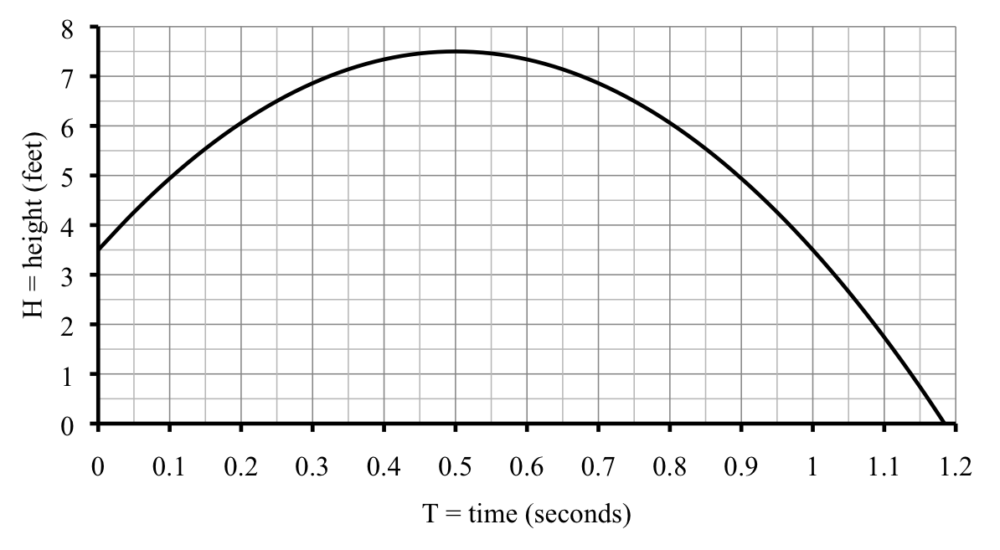

Quadratic Formula: The equation \(aT^2+bT+c=0\) has solutions
\begin{equation*}
T = \frac{-b}{2a} \pm \frac{\sqrt{b^2-4ac}}{2a}
\end{equation*}
1.
A high-jumper jumps so that the height, \(H\) feet, of the point on his back that must clear the bar after \(T\) seconds is given by the equation
\begin{equation*}
H = 3.5 + 16T -16T^2
\end{equation*}

(a)
When would the high-jumper hit the ground (if there were no pit)? Ouch! Use the Quadratic Formula to find the answer. Use the graph to check.
(b)
The high jump pit is 2 feet off the ground. When does the high-jumper land in the pit? Use the Quadratic Formula to find the answer and the graph to check.
(c)
How high a bar can the high-jumper clear? Find the maximum height of that point above ground by evaluating at \(\displaystyle T=\frac{-b}{2a}\text{.}\) Use the graph to check.
2.
The art museum opened in 1920. After an initial rush to see the great holdings, attendance dropped for awhile. But then attendance began to rise again and has risen since. The number of annual visits \(N\) is approximated by the equation
In what year did the number of visitors first pass 30,000 in a year? Estimate the value from your graph. Then set up and solve a quadratic equation.
(d)
According to this equation, in what year was the number of annual visits the smallest? For that year, what were the number of visits? Use \(\displaystyle T=\frac{-b}{2a}\text{.}\)
(e)
Explain why \(N\) never equals 0.
(f)
What happens if you try to use the Quadratic Formula to solve for \(N=0\text{?}\)
3.
The profit $\(P\) from selling \(M\) tanks of milk is described by the equation
Explain why negative numbers on the horizontal axis make sense in the story.
(b)
How much milk must be sold for the company to break even, meaning having $0 profit? Guess from the graph and check using the equation.
(c)
For practice, set up and solve a quadratic equation to find the break even point.
(d)
How many tanks of milk would they need to sell to keep profits over $400,000? Set up and solve a quadratic equation to find the answer. Then check that it agrees with your graph. Your answer should be in the form of an inequality.
4.
Urban community gardens are catching on. What was once an abandoned lot down the block is now a thriving 10’\(\times\)25’ vegetable and berry garden for the neighborhood. One neighbor volunteered to donate gravel to make a path around the garden. The path will be 3 inches deep and the same width all around.
The amount of gravel we need (\(G\) cubic feet) is given by the equation
\begin{equation*}
G = W^2 + 17.5W
\end{equation*}
where \(W\) is the width of the path in feet. For example, a path 4 feet wide requires 86 cubic feet of gravel, as you can check. (Story also appears in 2.3 and 2.4 Exercises)
(a)
If the neighbor donates 60 cubic feet of gravel, how wide a path can they build? Set up and solve a quadratic equation to find the answer in feet, accurate to two decimal places. Then convert your answer into inches.
(b)
Gravel is measured by the yard, which is short for cubic yard. There are 27 cubic feet in 1 yard of gravel. If the neighbor donates three yards of gravel, how wide a path can they build? Set up and solve a quadratic equation to find the answer in feet, accurate to two decimal places. Then convert your answer into inches.
(c)
What would it mean to solve the equation to find where \(G=0\text{?}\) Can you tell what the answer is from the equation (without actually solving)?
Subsection3.5.1When you’re done ...
Check your solutions. Still confused? Work with a classmate, instructor, or tutor.
Try the Do you know questions. Not sure? Read the textbook and try again.
Make a list of key ideas and processes to remember under Don’t forget!
Do the textbook exercises and check your answers. Not sure if you are close enough? Compare answers with a classmate or ask your instructor or tutor.
Getting the wrong answers or stuck? Re-read the section and try again. If you are still stuck, work with a classmate or go to your instructor’s office hours or tutor hours.
It is normal to find some parts of exercises difficult, but if most of them are a struggle, meet with your instructor or advisor about possible strategies or support services.
Subsection3.5.2Do you know ...
What a “quadratic” function is?
How to solve a quadratic equation?
When we use the Quadratic Formula? Ask your instructor if you need to remember the Quadratic Formula or if it will be provided during the exam.
How to solve a quadratic equation when the function is not set equal to zero?
How to identify the values of \(a, b, c\) in the formula?
How to evaluate the formula (using your calculator)?
Why there are (usually) two solutions to a quadratic equation?
How to decide which solution(s) from the Quadratic Formula are correct?
What the graph of a quadratic function looks like?
The value for the independent variable to find the highest (or lowest) value of a quadratic function?